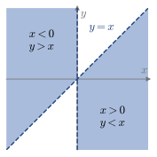
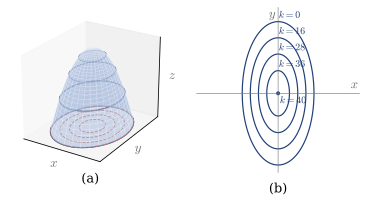
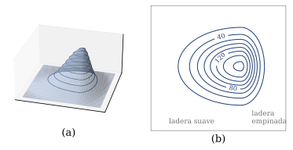

6.1 Funciones de varias variables y curvas de nivel
Muchas magnitudes dependen de más de una variable. Una función de dos variables se dibuja como una superficie, y sus curvas de nivel la describen sobre el plano, como un mapa.
Funciones de varias variables
Hasta ahora, una función asignaba a cada x un único valor y=f(x). Pero muchas magnitudes dependen de varias:
- El alcance de un proyectil lanzado desde el suelo con velocidad v_0 y ángulo \theta es x_{\max}=\dfrac{v_0^2\sin2\theta}{g}: depende de v_0 y de \theta.
- La temperatura de una barra que se enfría, T(x,t), depende del punto x y del instante t.
Definición 6.1
Sea D\subset\mathbb{R}^2. Una función real de dos variables definida en D asigna a cada punto (x,y)\in D un único número real z=f(x,y): f:D\subset\mathbb{R}^2\longrightarrow\mathbb{R},\qquad (x,y)\longmapsto z=f(x,y). El conjunto D es su dominio. Del mismo modo se definen las funciones de tres o más variables, f:D\subset\mathbb{R}^n\to\mathbb{R}.
Si solo se da la fórmula, el dominio es el conjunto de puntos en los que se puede calcular. Las restricciones son las de siempre: no dividir por cero, raíces de índice par de números no negativos y logaritmos de números positivos.
Ejemplo 6.1
Hallar y dibujar el dominio de:
- f(x,y)=\ln(x^2-xy)
- g(x,y,z)=\sqrt{x+y+z-1}
(a) Hace falta x^2-xy=x(x-y)>0: los dos factores tienen el mismo signo. \begin{aligned} x>0 \text{ y } x-y>0&\quad\Longrightarrow\quad x>0,\ y<x,\\ x<0 \text{ y } x-y<0&\quad\Longrightarrow\quad x<0,\ y>x. \end{aligned} Son dos regiones del plano, sin la recta y=x ni el eje OY, que forman su frontera.

(b) Hace falta x+y+z\ge1: es el semiespacio por encima del plano x+y+z=1, incluido el plano.
Comprobación: (1,0) está en el dominio de f, con f(1,0)=\ln1=0, y (0,1) no lo está, porque x^2-xy=0.
Gráfica y curvas de nivel
La gráfica de f(x,y) es la superficie formada por los puntos (x,y,z) con z=f(x,y). Dibujarla a mano es difícil. Es más cómodo cortarla con planos horizontales z=k y llevar los cortes al plano XY.
Definición 6.2
Sea z=f(x,y) definida en D\subset\mathbb{R}^2. Para cada constante k, la curva f(x,y)=k es una curva de nivel de f.
Ejemplo 6.2
Dibujar las curvas de nivel de f(x,y)=40-4x^2-y^2.
La curva de nivel k es 4x^2+y^2=40-k. Según el valor de k:
- Si k<40, es la elipse \dfrac{x^2}{(40-k)/4}+\dfrac{y^2}{40-k}=1, de semiejes \frac{\sqrt{40-k}}{2} y \sqrt{40-k}.
- Si k=40, es el punto (0,0).
- Si k>40, no hay ningún punto.
Al crecer k, las elipses se encogen: la superficie es una montaña con la cima en (0,0,40) (Figura 6.1).

Figura 6.1. (a) Superficie z=40-4x^2-y^2 y sus cortes con planos horizontales. (b) Curvas de nivel.
Comprobación: en el borde de la montaña, z=0, la elipse 4x^2+y^2=40 corta los ejes en x=\pm\sqrt{10} e y=\pm\sqrt{40}.
Las curvas de nivel se usan a diario:
- En un mapa topográfico, cada curva une los puntos de la misma altura. Donde las curvas están juntas, la pendiente es fuerte; donde están separadas, es suave (Figura 6.2).
- En un mapa del tiempo, las isobaras unen los puntos de igual presión. Isobaras muy juntas indican una borrasca profunda y viento fuerte; isobaras separadas, un anticiclón suave.

Figura 6.2. (a) Una colina. (b) Su mapa topográfico, con curvas cada 20 m.
Demo en GeoGebra
Relaciona la superficie z=f(x,y) con sus curvas de nivel.
Abrir la demo Autoría: Sarah Harrelson
Superficies de nivel
La gráfica de w=f(x,y,z) necesitaría cuatro dimensiones. Se describe con los cortes w=k, que ahora son superficies.
Definición 6.3
Sea w=f(x,y,z) definida en D\subset\mathbb{R}^3. Para cada constante k, la superficie f(x,y,z)=k es una superficie de nivel de f.
Ejemplo 6.3
El potencial gravitatorio que crea una masa M situada en el origen es V(x,y,z)=-\frac{GM}{\sqrt{x^2+y^2+z^2}}, con G constante. Hallar sus superficies de nivel.
Como V<0, solo hay superficies de nivel con k<0: -\frac{GM}{\sqrt{x^2+y^2+z^2}}=k\quad\Longrightarrow\quad x^2+y^2+z^2=\left(\frac{GM}{k}\right)^2. Son esferas centradas en la masa, de radio \frac{GM}{|k|}: el potencial es el mismo en todos los puntos a la misma distancia de M. Cuanto más cerca de 0 está k, mayor es el radio.
Recuerda
\begin{array}{llll} \text{Función} & \text{Dominio} & \text{Gráfica} & \text{Cortes}\\ \hline y=f(x) & \text{recta, 1D} & \text{curva, 2D} & \text{puntos}\\ z=f(x,y) & \text{plano, 2D} & \text{superficie, 3D} & \text{curvas de nivel}\\ w=f(x,y,z) & \text{espacio, 3D} & \text{4D} & \text{superficies de nivel} \end{array}
Con los contenidos de esta sección puedes hacer los ejercicios 6.1–6.2.